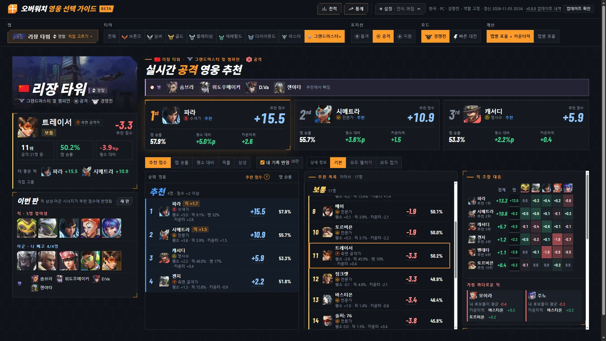
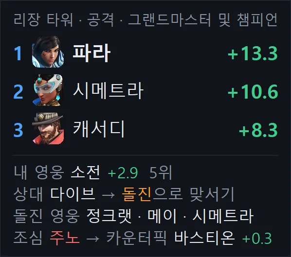
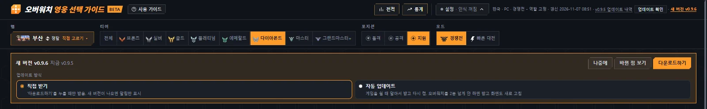

사용법
처음이면 아래 세 단계만. 나머지는 필요할 때 찾아보기.
- 받아서 실행하기OW-MapPicker.bat을 받아 더블클릭. 브라우저에 추천 화면이 열리면 준비 끝.
- 오버워치 켜기프로그램을 켜 둔 채 게임 실행. 영웅 선택 화면에서 맵과 내 영웅이 저절로 들어옴.
- 게임 중 Tab 1~2초점수판을 잠깐 누르고 있으면 밴과 양 팀 영웅을 읽어 카운터픽까지 계산.
설치
Windows 10, 11 (64비트)용. 필요한 구성요소는 처음 한 번 알아서 설치, 1~3분 걸림. 끝나면 바탕 화면에 오버워치 영웅 선택 가이드 (베타 버전) 바로가기 생성.
처음 실행할 때 나올 수 있는 창
| 나타나는 창 | 누를 것 |
|---|---|
| 브라우저의 "흔하지 않은 파일" 경고 | 유지 |
| 파란색 "Windows의 PC 보호" 창 | 추가 정보 → 실행 |
| 관리자 확인 창 (한국어 글자 인식 기능이 없는 PC만) | 예 |
zip으로 직접 설치하기
- OW-MapPicker.zip 받기. 지난 버전은 전체 버전에
- zip 파일 오른쪽 클릭 → 속성 → 아래쪽 차단 해제 체크 → 확인. 건너뛰면 실행할 때마다 보안 경고
- 원하는 곳에 압축을 풀고
OW-MapPicker폴더 안의start.bat더블클릭. Python이 없으면 python.org 공식 설치 파일로 지금 계정에만 설치, 관리자 권한 필요 없음
게임 중 쓰는 법
- 프로그램을 켜 둔 채 오버워치 실행. 선호 영웅 선택, 영웅 선택 화면에서 맵과 내 영웅이 저절로 들어옴
- 게임 중 Tab(점수판)을 1~2초 누르고 있으면 밴과 아군·적군 영웅을 읽음. 밴은 대기실 금지까지 최대 5명
- 처음 보는 얼굴 그림이나 등급 아이콘은 화면에서 한 번 골라 주면 다음부터 저절로 읽음
- 경기가 끝나면 승패를 읽어 전적에 저장. 못 읽었으면 화면에서 직접 고르기
검은 창은 닫지 말고 최소화. 이 창이나 추천 화면(브라우저 탭)을 모두 닫으면 프로그램이 꺼짐.
추천 화면 보는 법

| 어디 | 볼 것 |
|---|---|
| 위쪽 카드 | 지금 판에서 고르기 좋은 1st·2nd·3rd. 오른쪽 위 큰 숫자가 추천 점수, 아래는 맵 승률 · 평소 대비 · 카운터픽. 넓은 화면은 픽률 · 밴률 · 점수 구성까지 |
| 왼쪽 | 맵, 내 영웅 칸(판정 · 추천 점수 · 순위 · 맵 승률 · 평소 대비 · 더 좋은 픽), 이번 판 밴 · 아군 · 적군 · 등급 범위. 저절로 들어오고, 틀리면 직접 고치기 |
| 가운데 | 내 포지션 영웅 전체를 추천 · 보통 · 비추천으로 정렬한 표. 큰 화면은 반반 두 칸: 왼쪽에서 잘리는 줄부터 '추천 목록 이어서'에서 스크롤. 머리줄 '추천 점수' 옆 ?에 마우스를 올리거나 누르면 계산법. 내 영웅 줄은 목록 가운데로 |
| 오른쪽 | 적 조합 대응(합계 = 맵 점수 + 상성, 칸은 적 영웅별 상성), 조합 분석(상대 주 성향 · 받아칠 성향 · 운영 요령), 나올 만한 영웅(역할별 이 맵 점수 높은 순 5명). 칸 안에서 스크롤. 적 5명을 다 알기 전에는 나올 만한 영웅이 맨 위 |
점수는 참고용
- 추천 점수는 넥슨 공식 통계의 이 맵 · 티어 승률에 상성 · 시너지 · 조합을 더한 추정값.
- 경기가 적은 영웅·맵은 값이 흔들려서 보정. '표본 적음'이 붙은 값은 경기 수가 적은 값.
- 통계를 언제 받았는지는 화면 위쪽 '갱신' 시각에 늘 표시.
- 패치 직후 새 통계가 너무 적으면 패치 전 통계를 유지(최대 7일). 패치 전 통계가 없는 맵은 그 맵만 패치 후 판으로 계산하고 맵 이름 아래에 안내.
창 폭 1400px 아래에서는 1~3순위를 작게 줄이고, 그 아래 적 조합 대응 → 조합 분석 → 목록 순서로 한 줄씩. 폰과 900px 아래 창은 맵 → 내 영웅 → 1~3순위 → 이번 판 → 적 조합 대응 → 조합 분석 → 목록 순서.
오버레이
게임 화면 구석에 1~3순위와 맞설 성향, 조심할 적을 작게 표시. 화면 위쪽 설정 → 오버레이 → 켜기.
- 게임 중에는 Ctrl + Shift + O로 켜고 끄기.
- 오버워치 화면 모드는 전체 창 모드로 (설정 › 비디오 › 화면 모드).
- 영웅 선택 · 점수판(Tab)일 때만 보이게 하면 교전 중 화면을 가리지 않음.
오버레이 세부 설정
- 단축키는 설정 창의 바꾸기에서 변경.
- 마우스로 끌어 옮기면 그 자리를 기억. 처음 자리로를 누르면 오른쪽 위로.
- 마우스 통과를 켜면 창 위를 눌러도 게임으로 전달.
- 진하기, 크기, 사용량(고성능, 표준, 가벼운) 조절.
- 점수판에서 상대가 영웅을 바꾸면 "적 겐지 → 트레이서 교체" 같은 알림이 잠깐 표시.
- 게임에 아무것도 주입하지 않는 일반 창.

폰 · 인식 모드
폰으로 보기
화면 위쪽 설정 → 폰 → 켜기, 나오는 주소를 휴대폰 브라우저에 입력. PC와 휴대폰이 같은 Wi-Fi여야 함. 처음 켤 때 Windows 방화벽 창이 뜨면 허용.
인식 모드
설정 안에서 고르기. 가벼운 모드(처음 설정)는 화면 인식을 줄여 게임이 끊기지 않게, 성능 모드는 더 빨리 읽음. 옆의 ! 단추를 누르면 두 모드 차이 표시.
업데이트

- 새 버전이 나오면 화면 위에 알림. 다운로드하기를 누르면 알아서 바꿔 끼우고 다시 켬. 전적, 배운 얼굴, 설정은 그대로.
- 자동 업데이트를 고르면 오버워치를 2분 넘게 안 할 때 알아서 받음. 게임 중에는 받지 않음.
- 버전마다 바뀐 점은 프로그램 화면 위쪽 '업데이트 내역'이나 전체 버전에서 확인.
문제 해결
| 이럴 때 | 이렇게 |
|---|---|
| 맵·영웅을 못 읽음 | 게임 화면 모드를 전체 창 모드(테두리 없는 창)로 |
| 게임이 끊김 | 가벼운 모드를 켜고 오버레이 사용량을 가벼운으로 |
| 오버레이가 안 보임 | 전체 창 모드인지, 오버레이 설정에서 보이는 때가 늘 보이기인지 확인 |
| 0.2.0 실행기 사용 중 | OW-MapPicker.bat을 한 번 다시 받아 실행. 실행기만 바뀌고 기록은 그대로 |
| 그 밖의 문제 | 검은 창의 내용과 문제가 생긴 때의 게임 화면 사진을 GitHub 이슈로 보내기 |
다음 판부터 바로
파일 하나 받아 더블클릭하면 끝.